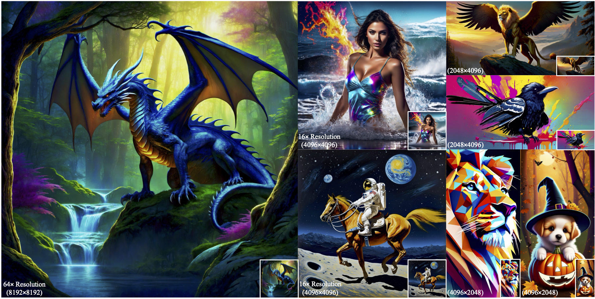

FreeScale: Unleashing the Resolution of Diffusion Models
via Tuning-Free Scale Fusion
ICCV 2025

ICCV 2025


Impressionist style, a yellow rubber duck floating on the wave on the sunset.
Iron Man surfing on the sea.
A camel walking in a desert landscape.
Flying through an intense battle between pirate ships in a stormy ocean.
A corgi running on the grassland on the grassland.
A lion is swimming.
Campfire at night in a snowy forest with starry sky in the background.
A panda walking and munching bamboo in a bamboo forest.
Visual diffusion models achieve remarkable progress, yet they are typically trained at limited resolutions due to the lack of high-resolution data and constrained computation resources, hampering their ability to generate high-fidelity images or videos at higher resolutions. Recent efforts have explored tuning-free strategies to exhibit the untapped potential higher-resolution visual generation of pre-trained models. However, these methods are still prone to producing low-quality visual content with repetitive patterns. The key obstacle lies in the inevitable increase in high-frequency information when the model generates visual content exceeding its training resolution, leading to undesirable repetitive patterns deriving from the accumulated errors. To tackle this challenge, we propose FreeScale, a tuning-free inference paradigm to enable higher-resolution visual generation via scale fusion. Specifically, FreeScale processes information from different receptive scales and then fuses it by extracting desired frequency components. Extensive experiments validate the superiority of our paradigm in extending the capabilities of higher-resolution visual generation for both image and video models. Notably, compared with the previous best-performing method, FreeScale unlocks the generation of 8k-resolution images for the first time.
Overall framework of FreeScale. (a) Tailored Self-Cascade Upscaling. FreeScale starts with pure Gaussian noise and progressively denoises it using the training resolution. An image is then generated via the VAE decoder, followed by upscaling to obtain a higher-resolution one. We gradually add noise to the latent of this higher-resolution image and incorporate this forward noise into the denoising process of the higher-resolution latent with the use of restrained dilated convolution. Additionally, for intermediate latent steps, we enhance high-frequency details by applying region-aware detail control using masks derived from the image. (b) Scale Fusion. During denoising, we adapt the self-attention layer to a global and local attention structure. By utilizing Gaussian blur, we fuse high-frequency details from global attention and low-frequency semantics from local attention, serving as the final output of the self-attention layer.
FreeScale may regenerate the original blurred areas at low resolution based on the prior knowledge that the model has learned. As shown in the bottom row, two originally chaotic and blurry faces are clearly outlined at 8k resolution.
Image qualitative comparisons with other baselines. Our method generates both 2048x2028 and 4096x4096 vivid images with better content coherence and local details.

Video qualitative comparisons with other baselines (4x resolution, 640x1024). While other baselines fail in video generation, FreeScale effectively generates higher-resolution videos with high fidelity.
A better result will be generated by adding the coefficient weight in the area of Griffons and reducing the coefficient weight in the other regions.
If you find this paper useful in your research, please consider citing:
@article{qiu2024freescale,
title={FreeScale: Unleashing the Resolution of Diffusion Models via Tuning-Free Scale Fusion},
author={Qiu, Haonan and Zhang, Shiwei and Wei, Yujie and Chu, Ruihang and Yuan, Hangjie and Wang, Xiang and Zhang, Yingya and Liu, Ziwei},
journal={arXiv preprint arXiv:2412.09626},
year={2024}
}